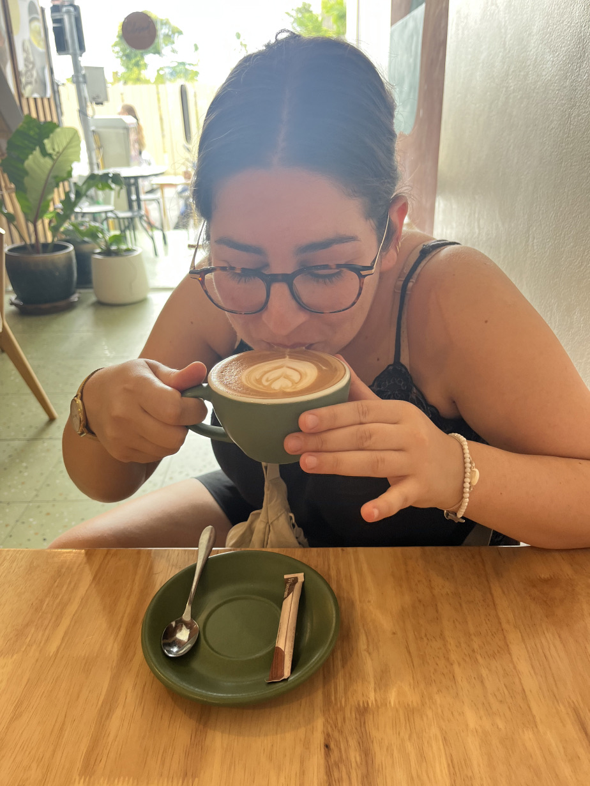
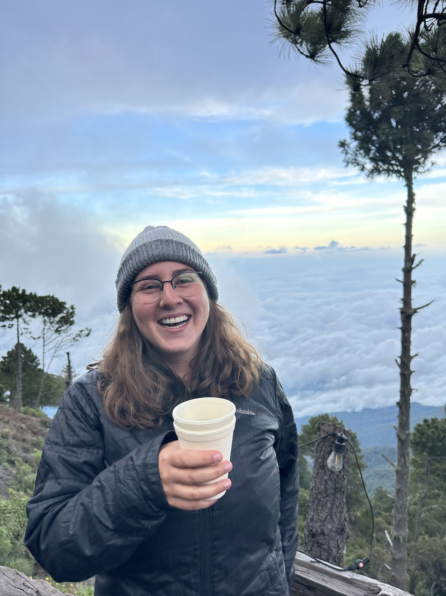
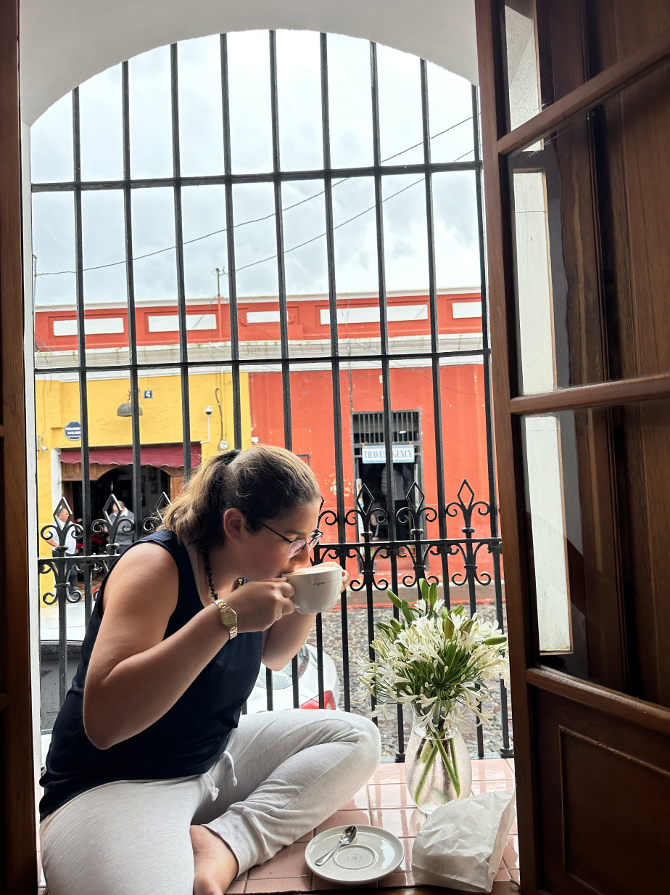
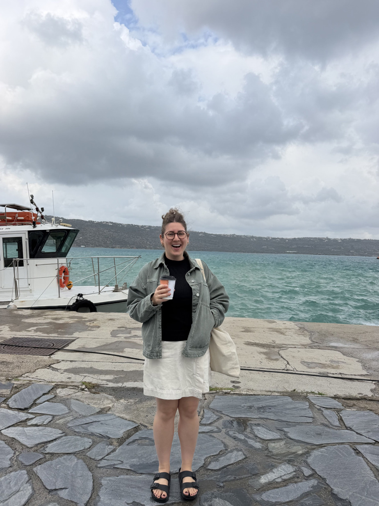
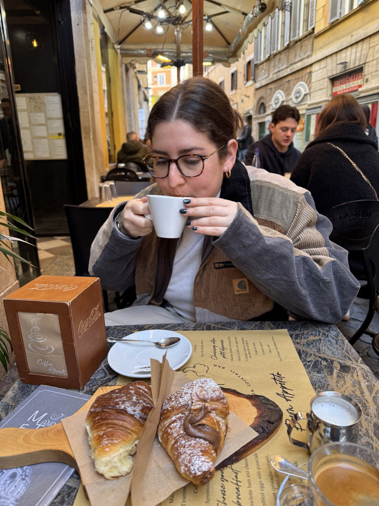
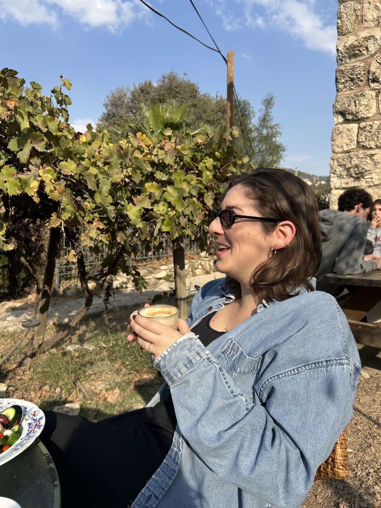

Yael Lenga
I’m a graphic UX/UI designer based in Tel Aviv.
I’m graduating the Visual Communication program at Bezalel Academy of arts.
When I’m not designing, you’ll probably find me baking, traveling, reading or designing tables.
and definitely holding a coffee...
don’t hesitate to reach out: